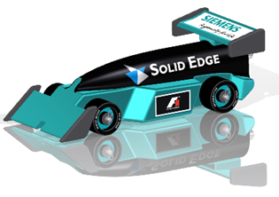
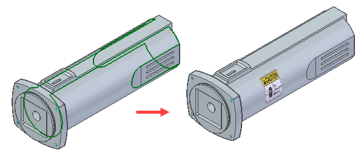
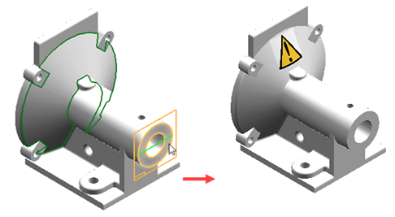
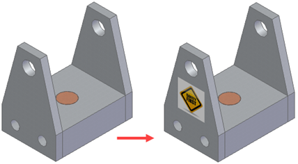

Applying decals to models
You can use the Decal command in part, sheet metal, or assembly to affix a brand logo, an instruction label, or a warning message to a model. You can add an image to show product styling, or to depict visual detail on a simplified model.

You can place the decal directly on a part model or completely within the boundaries of a face or across multiple faces. A Decals group is added in PathFinder to list the decals you added. You can select a decal from the list and edit or delete it. Decals are visible in downstream applications, such as assembly, draft, and rendering.
Since the decal is projected onto the face or applied as a label, it cannot be located graphically and does not appear in Quickpick.
Decal types
There are two types of decals:
-
Label—Applies an image onto the face relative to the contour of a face.

-
Planar projection—Projects an image onto a face from a planar face or reference plane.

Adding a label decal workflow
-
Insert an image of the decal.
-
Identify a face on which to place the decal.
-
Adjust the decal display by changing such things as the height, width, angle, and XY location.
Adding a planar projection decal workflow
-
Insert an image of the decal.
-
Identify a face on which to project the decal.
-
Identify a planar face or reference plane.
Note:If you selected a single planar face in the previous step, this step is skipped.
-
Add constraints and dimensions to accurately place the decal.
Note:You can also adjust the decal display by changing such things as the height, width, angle, and XY location.
Decals in assemblies
You can place decals on part faces directly within an assembly.

Placing the decal within the assembly adds a Decals collector within PathFinder that contains the decal you placed in the assembly.